لأبي عبد الله محمد بن محمد بن داود الصِّنهاجي المعروف بابن آجُرُّوم (ت ٧٢٣هـ)
❖ ❖ ❖
Study notes with English explanation الدرس الأول – الدرس الخامس (ج)
The matn & definitionsExamplesتنبيه / فائدةالإعراب (parsing)
الفهرس
Contents
بسم الله الرحمن الرحيم
المقدّمة الآجرّوميّة
الدرس الأول: المقدمات الأربعة
Lesson One — The Four Introductions
١- التعريف بالمؤلِّف the author
٢- التعريف بالكتاب the book
٣- التعريف بعلم النحو the science of grammar
٤- طريقة التدريس the method of study
من المذكّرة · صفحة ١Handout p. 1 · tap to zoom
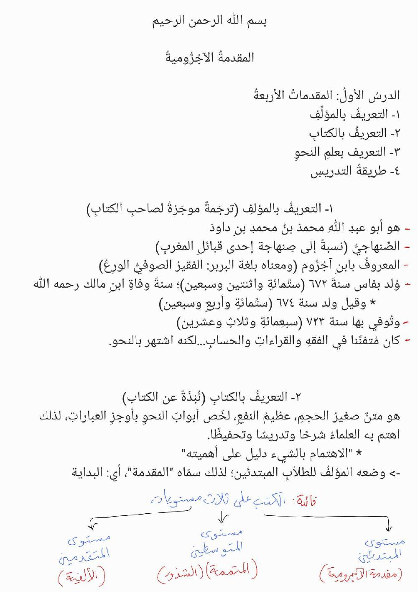
↓ الشرح · Explanation
Before beginning any classical text, scholars introduce four things: who wrote it, what the book is, what the science is, and how it will be studied.
1. The author١- التعريف بالمؤلِّف
His name
أبو عبد الله محمد بن محمد بن داود
His نسبة (tribal attribution)
الصِّنهاجي — from صنهاجة, one of the tribes of the Maghrib.
Known as
ابن آجُرُّوم — in the Berber language this means الفقير الصوفي الورِع: “the poor, devout ascetic”.
Born
In Fez, 672 AH — the very year ابن مالكابن مالك died. Some say 674 AH.
Died
In Fez, 723 AH.
Scholarship
Skilled in الفقه, القراءات and arithmetic, but became famous for النحو.
2. The book٢- التعريف بالكتاب
It is a متن small in size but great in benefit. It summarises the chapters of grammar in the briefest wording, which is why scholars gave it so much attention — explaining it, teaching it and memorising it.
قاعدةالاهتمام بالشيء دليلٌ على أهميته — the attention given to a thing is a sign of its importance.
The author wrote it for beginners, so he named it المقدمة: “the beginning”.
فائدة: الكتب على ثلاث مستويات
مستوى المبتدئين
Beginners
مقدمة الآجرومية
مستوى المتوسطين
Intermediate
المتمِّمة · الشذور
مستوى المتقدمين
Advanced
الألفية
من المذكّرة · صفحة ٢Handout p. 2 · tap to zoom
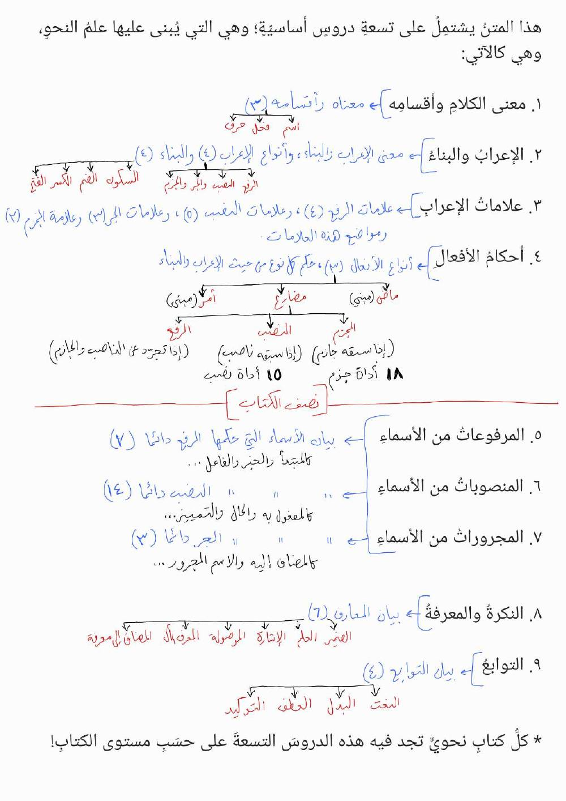
↓ الشرح · Explanation
The nine foundational lessonsالدروس الأساسية التسعة
This متن contains nine foundational lessons on which all of grammar is built:
#
Lesson
What it covers
١
معنى الكلام وأقسامه
What speech is, and its 3 parts: اسم، فعل، حرف.
٢
الإعراب والبناء
Their meaning; the 4 kinds of إعراب (الرفع، النصب، الجر، الجزم) and the 4 kinds of بناء (السكون، الضم، الكسر، الفتح).
٣
علامات الإعراب
Signs of الرفع (4), النصب (5), الجر (3), الجزم (2), and where each is used.
٤
أحكام الأفعال
The 3 kinds of verb and the ruling of each: الماضي and الأمر are مبني; المضارع is مرفوع when free of governors, منصوب after a ناصب, مجزوم after a جازم.
٥
المرفوعات من الأسماء
Together these make up half the book: the nouns whose ruling is always الرفع (7) — e.g. المبتدأ والخبر والفاعل; always النصب (14) — e.g. المفعول به والحال والتمييز; always الجر (3) — e.g. المضاف إليه والاسم المجرور.
فائدةEvery grammar book contains these same nine lessons — treated more deeply according to the book's level.
من المذكّرة · صفحة ٣Handout p. 3 · tap to zoom
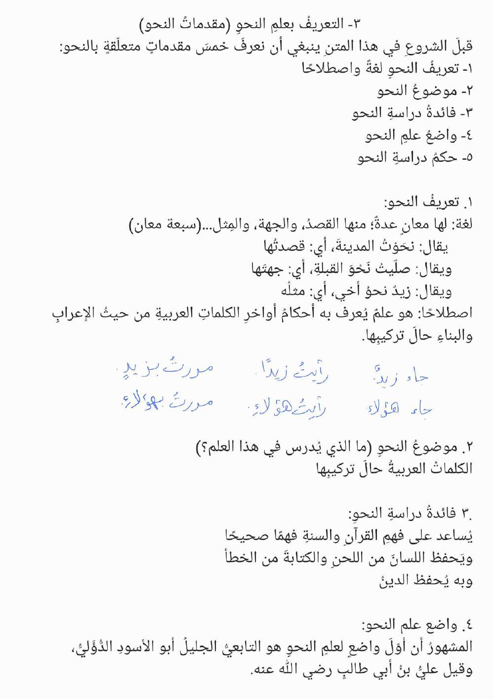
↓ الشرح · Explanation
3. The science of grammar٣- التعريف بعلم النحو
Before starting the متن, we should know five introductory matters about النحو:
١- تعريف النحو لغةً واصطلاحًا
٢- موضوع النحو
٣- فائدة دراسة النحو
٤- واضع علم النحو
٥- حكم دراسة النحو
① Definitionتعريف النحو
لغةً (linguistically), the word has several meanings — seven in all — among them:
Meaning
Example
Translation
القصد — aim
نحوتُ المدينةَ
I headed for the city
الجهة — direction
صليتُ نحوَ القبلة
I prayed towards the القبلة
المِثل — likeness
زيدٌ نحوُ أخي
زيد is like my brother
هو علمٌ يُعرَف به أحكامُ أواخرِ الكلماتِ العربيةِ من حيث الإعرابُ والبناءُ حالَ تركيبِها
A science by which one knows the rulings on the endings of Arabic words — whether they change or stay fixed — when they are combined in a sentence.
The ending changes (مُعرَب):
جاء زيدٌ | رأيتُ زيدًا | مررتُ بزيدٍ
The ending stays (مبني):
جاء هؤلاءِ | رأيتُ هؤلاءِ | مررتُ بهؤلاءِ
② Subject matter — what does it study?موضوع النحو
الكلمات العربية حال تركيبها — Arabic words while they are combined in sentences.
③ Its benefitفائدة دراسة النحو
It helps one understand القرآن and السنة correctly.
It protects the tongue from اللحن (errors in speech), and writing from mistakes.
Through it, الدين is preserved.
④ Its founderواضع علم النحو
The well-known view: the التابعيأبو الأسود الدؤلي. It is also said: علي بن أبي طالب رضي الله عنه.
من المذكّرة · صفحة ٤Handout p. 4 · tap to zoom
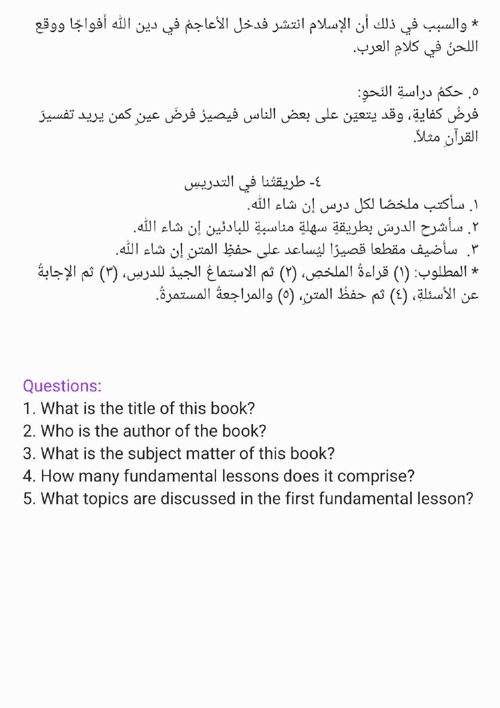
↓ الشرح · Explanation
السببIslam spread, non-Arabs entered the religion in crowds, and اللحن began to appear in the speech of the Arabs — so the rules had to be set down.
⑤ The ruling on studying itحكم دراسة النحو
فرض كفاية — a communal obligation. It can become فرض عين (a personal obligation) for some people, such as one who wants to do تفسير القرآن.
4. Our method٤- طريقتنا في التدريس
A written summary for every lesson.
The lesson explained simply, suited to beginners.
A short portion of the متن to help you memorise it.
المطلوب — what's required of you: ① read the summary ② listen well to the lesson ③ answer the questions ④ memorise the متن ⑤ revise continually.
Exercisesأسئلة
What is the title of this book?
المقدمة الآجرومية.
Who is the author of the book?
أبو عبد الله محمد بن محمد بن داود الصنهاجي, known as ابن آجروم (672–723 AH, Fez).
What is the subject matter of this book?
النحو — Arabic words as they are combined in sentences.
How many fundamental lessons does it comprise?
Nine.
What topics are discussed in the first fundamental lesson?
The meaning of الكلام and its three parts: اسم، فعل، حرف.
بسم الله الرحمن الرحيم
المقدّمة الآجرّوميّة
الدرس الثاني: الكلام وأقسامه
Lesson Two — Speech and Its Parts
١- تعريف الكلام لغةً واصطلاحًا definition
٢- أقسام الكلام its parts
٣- علامات كل قسم من أقسام الكلام the signs of each
من المذكّرة · صفحة ٥Handout p. 5 · tap to zoom
↓ الشرح · Explanation
This is the first lesson in every grammar book, because الكلام is exactly what النحو studies.
1. Defining speech١- تعريف الكلام
لغةً (according to the people of language): نُطقٌ مُفهِم — an utterance that conveys meaning. [مقاييس اللغة لابن فارس]
الكلامُ هو اللفظُ المركَّبُ المفيدُ بالوضعِ
Speech is an utterance, composed, conveying full benefit, by (Arabic) convention.
So speech is whatever fulfils four conditions:
Condition 1 — an utterance١. اللفظ
A sound that contains some of the letters of the alphabet (ا ب ت ث…).
زيد | فاطمة | بيت | هذا | إنّ | ذهب
This excludes (خرج بهذا الشرط): ① anything that isn't a sound — gestures, writing, drawing; ② any sound with no letters in it — a drum, a baby crying, a dog barking.
Condition 2 — composed٢. المركّب
Made up of two or more words — either said aloud or understood (تقديرًا).
قام زيدٌ | فاطمةُ في البيت | اذهبْ! (implied: اذهبْ أنتَ) | ما اسمك؟ «محمد» (implied: اسمي محمد)
This excludesالمفرد — a single word on its own, like زيد or في.
Condition 3 — beneficial٣. المفيد
It gives a complete meaning, such that it's fine for the speaker to stop there (يحسُن السكوت عليها).
أنا مسلمٌ | اللهُ في السماء | ليلى غسلت وجهَها
This excludesالمركب غير المفيد — phrases that leave you waiting: قلمُ محمدٍ… / إن جاء أبي… / دخل الذي…
Condition 4 — by convention٤. بالوضع
The words follow Arabic convention, as in all the examples above. This excludesكلام العجم — e.g. “I am really enjoying this class.”
من المذكّرة · صفحة ٦Handout p. 6 · tap to zoom
↓ الشرح · Explanation
تنبيهWhat's meant is using a foreign word when an Arabic word exists with the same meaning. Arabised nouns (الأسماء المعرَّبة) are not excluded: إنترنت، أسفلت، ألبوم، أوتوماتيكي.
فائدةThe people of the language have two ways of adding new words: ١. طريقة الاشتقاق — find an Arabic word that suits the meaning: طائرة (derived from طار – يطير) for “aeroplane”; الشبكة الدولية / الشبكة العنكبوتية for the internet. ٢. طريقة التعريب — if that isn't possible, bring the foreign word into Arabic with a light change to fit Arabic: داود، يوسف، إبراهيم، بيبسي.
An example of speech fulfilling all the conditions: مكةُ قبلةُ المسلمين — it is an utterance, composed, beneficial, by Arabic convention.
2. The parts of speech٢- أقسام الكلام
وأقسامُه ثلاثةٌ: اسمٌ، وفعلٌ، وحرفٌ جاءَ لمعنًى
Its parts are three: a noun, a verb, and a particle that comes for a meaning.
أقسامه — whether we say the parts of الكلمة or of الكلام, the intended meaning is one: a word is a noun, verb or particle, and speech too is built from these. This is naming the whole for the part, as in ﴿يجعلون أصابعهم في آذانهم﴾ — i.e. their fingertips.
من المذكّرة · صفحة ٧Handout p. 7 · tap to zoom
↓ الشرح · Explanation
الدليل على انحصارها في هذه الثلاثةالتتبُّع والاستقراء — scholars surveyed the whole language and found nothing else.
الكلمة ثلاثة أقسام
اسم
Shows a meaning in itself, not tied to a time.
رجل · بيت · قلم · محمد · قِطّ · مكة
فعل
Shows a meaning in itself and is tied to a time — past, present or future.
دخلَ · يدخلُ · ادخلْ
حرف جاء لمعنى
Shows a meaning only in another word.
هل · في · لم · لن · قد · سوف
الحرف نوعان١. حرف مبنى — the letters of the alphabet: no meaning, they only build words. Not studied in grammar. ٢. حرف معنى — a word that shows a meaning in something else. This is the one meant here.
3. The signs of each part٣- علامات كل قسم
Each part has signs that distinguish it. The author mentions the easiest ones, suited to the level of the book.
The author mentions four signs — two at the start of the word and two at its end:
١. دخول الألف واللام (start)
القمر · الشمس
٢. التنوين (end)
مسجدٌ · مسجدٍ · مسجدًا
٣. حروف الخفض (start)
سلّمتُ على زيدٍ · صلّيتُ في مسجدٍ
٤. الخفض (end)
﴿بسمِ اللهِ الرحمنِ الرحيمِ﴾ — the three causes of الخفض meet here: a حرف, الإضافة, and following (التبعية).
فائدةThe حروف الجر in Arabic number 21: the 11 above + حتى، لعلّ، عدا، خلا، حاشا، متى، مذ، منذ، كي، لولا. The حروف القسم are used in oaths and are among the حروف الخفض: والله… · بالله لا أشربُ الخمرَ · ﴿تالله لأكيدنّ أصنامكم﴾
لماذا علامة مركّبة؟صَهْ means “be quiet!” but doesn't accept ياء المخاطبة — it is an اسم فعل أمر, not a verb. تسكتُ / يسكتُ accept it but aren't requests — so neither is أمر.
Shared signs (علامات مشتركة): قد — with الماضي and المضارع; ياء المخاطبة — with المضارع and الأمر; واو الجماعة — with all three.
من المذكّرة · صفحة ٩Handout p. 9 · tap to zoom
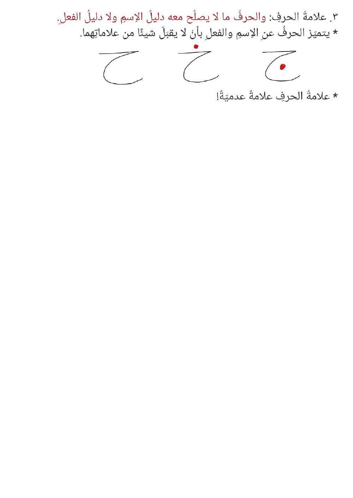
↓ الشرح · Explanation
Sign of the particle٣. علامة الحرف
والحرفُ ما لا يصلُح معه دليلُ الاسمِ ولا دليلُ الفعلِ
The حرف is distinguished from the noun and verb by accepting none of their signs. Its sign is an absence — علامة عدمية! Compare three letters of one shape:
جdot below
خdot above
حknown by no dot
Exercisesأسئلة
Provide two examples that fulfil all the conditions above, and three that do not.
✓ الصلاةُ نورٌ · ذهب الطالبُ إلى المدرسة ✗ كتاب (not مركّب) · إن اجتهدتَ (not مفيد) · a nod of the head (not لفظ).
Your friend sends you a text message: السلام عليكم ورحمة الله وبركاته. كيف حالك اليوم؟ Is this كلام by the definition above, and why?
Strictly, no: a text message is writing, and writing is excluded by the first condition, اللفظ. It is composed, beneficial and Arabic — if read aloud it would be كلام.
الاسم المضاف إلى ياء المتكلم — only a الكسرة suits the الياء.
صديقي · كتابي · بيتي · أولادي
حكمه: all vowels are implied on the letter before the الياء.
الإعراب(فرحتْ أمّي) أمّ: فاعلٌ مرفوعٌ وعلامة رفعه الضمة المقدّرة على ما قبل الياء، منع من ظهورها اشتغال المحل بحركة المناسبة
— مرفوع by an implied الضمة on the letter before the الياء, prevented because its place is taken by the vowel of suitability.
تنبيهIn this case the الكسرة you hear is for المناسبة; the الكسرة that is the sign of الجر is implied!
2. Its four kinds٢- أنواع الإعراب
وأقسامُه أربعةٌ: رفعٌ، ونصبٌ، وخفضٌ، وجزمٌ. فللأسماءِ من ذلك الرفعُ، والنصبُ، والخفضُ، ولا جزمَ فيها. وللأفعالِ من ذلك الرفعُ، والنصبُ، والجزمُ، ولا خفضَ فيها
Its kinds are four. Nouns take الرفع, النصب and الخفض — never الجزم. Verbs take الرفع, النصب and الجزم — never الخفض.
أنواع الإعراب (٤)
الرفع
nouns & verbs
يدرسُ زيدٌ
النصب
nouns & verbs
لن أقابلَ زيدًا
الجر
nouns only
سلّمتُ على زيدٍ · كتبتُ بالقلمِ
الجزم
the مضارع only
لم يدرسْ · لم يسافرْ
من المذكّرة · صفحة ١٣Handout p. 13 · tap to zoom
↓ الشرح · Explanation
3. The fixed ending — defined٣- تعريف البناء
The author didn't mention البناء, but we mention it to complete the picture.
لغةً: placing one thing upon another in a form meant to be firm and lasting.
لزومُ آخرِ الكلمةِ حالةً واحدةً لغيرِ عاملٍ
The end of a word keeping to one state, for no governing reason.
البناء is the exact opposite of الإعراب — وبضدّها تتميّز الأشياء, “by their opposites things become clear”!
جاء محمدٌ · قابلتُ محمدًا · سلّمتُ على محمدٍ
جاء هؤلاءِ · قابلتُ هؤلاءِ · سلّمتُ على هؤلاءِ (هؤلاء = a مبني word)
فائدةAll الحروف are مبنية; so are الماضي and الأمر.
4. Its four kinds٤- أنواع البناء
أنواع البناء (٤)
السكون
لمْ · لنْ · مَنْ
الكسر
هؤلاءِ · هذهِ · أنتِ
الضم
حيثُ · نحنُ · منذُ
الفتح
أينَ · كيفَ · أنتَ
تنبيهIn البناء you say: مبنيٌّ على الكسر، والضم، والفتح. In الإعراب you say: … وعلامة … الكسرةُ، والضمةُ، والفتحةُ.
Exercisesأسئلة
What is the difference between إعراب and بناء?
الإعراب: the ending changes because of the عامل. البناء: the ending stays the same whatever the عامل.
Mention two similarities between إعراب and بناء.
Both concern the end of the word; both have four kinds, shown through the same marks (الضمة, الفتحة, الكسرة, السكون).
What are the three موانع الإعراب? Give an example of each.
التعذر: جاء الفتى · الثقل: جاء القاضي · المناسبة: جاء أخي
Identify the مبني words in: هؤلاء السلفيون يدعون إلى الحق
هؤلاءِ (مبني على الكسر) and إلى (حرف مبني على السكون).
Analyse these two sentences: خطب الداعي. أفتى القاضي.
خطبَ: فعل ماضٍ مبني على الفتح. الداعي: فاعل مرفوع وعلامة رفعه الضمة المقدرة على الياء للثقل. أفتى: فعل ماضٍ مبني على الفتح المقدر على الألف للتعذر. القاضي: فاعل مرفوع وعلامة رفعه الضمة المقدرة على الياء للثقل.
بسم الله الرحمن الرحيم
المقدّمة الآجرّوميّة
الدرس الرابع (أ): علامات الإعراب ومواضعها
Lesson Four (A) — The Signs of الإعراب and Where They Occur
١- علامات الرفع ومواضعها
٢- علامات النصب ومواضعها
٣- علامات الجر ومواضعها
٤- علامات الجزم ومواضعها
من المذكّرة · صفحة ١٤Handout p. 14 · tap to zoom
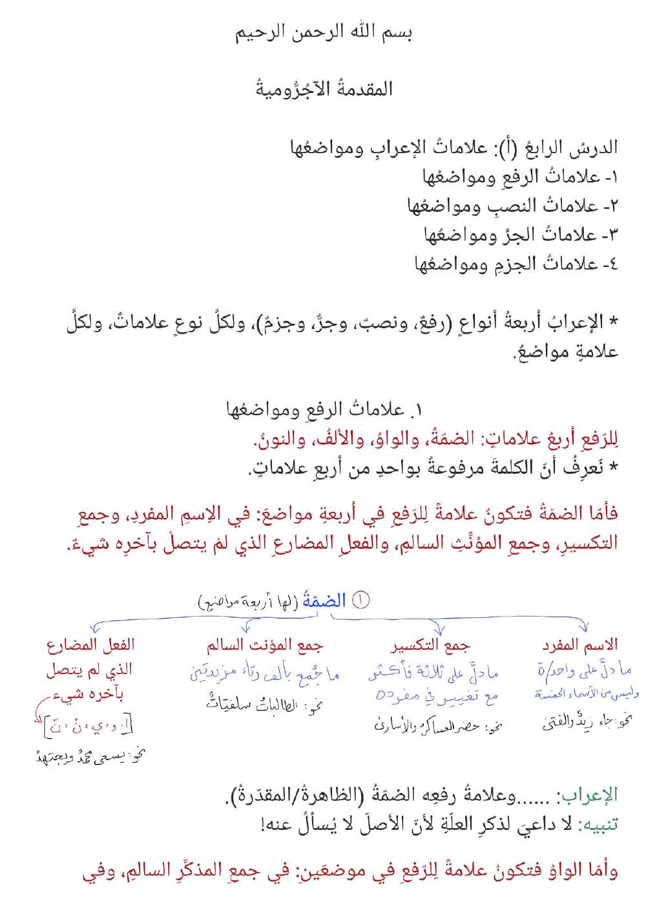
↓ الشرح · Explanation
الإعراب has four kinds (رفع، ونصب، وجر، وجزم). Each kind has signs, and each sign has places where it is used.
1. Signs of the nominative١- علامات الرفع ومواضعها
You know a word is مرفوع by one of these four signs.
① Four placesالضمة (لها أربعة مواضع)
فأمّا الضمةُ فتكونُ علامةً للرفعِ في أربعةِ مواضعَ: في الاسمِ المفردِ، وجمعِ التكسيرِ، وجمعِ المؤنثِ السالمِ، والفعلِ المضارعِ الذي لم يتّصلْ بآخرِه شيءٌ
Place
Meaning
Example
الاسم المفرد
Denotes one — not a dual, plural, or one of الأسماء الخمسة
جاء زيدٌ والفتى
جمع التكسير
Denotes three or more, with a change to its singular form
حضر العساكرُ والأسارى
جمع المؤنث السالم
A plural made with added الألف + التاء
الطالباتُ مسلماتٌ
الفعل المضارع الذي لم يتصل بآخره شيء
Nothing (ا، و، ي، ن) joined to its end
يسعى محمدٌ ويجتهدُ
الإعراب… وعلامة رفعه الضمة (الظاهرة / المقدرة).
تنبيهNo need to give the reason here — لأنّ الأصلَ لا يُسأل عنه: the default isn't asked about!
من المذكّرة · صفحة ١٥Handout p. 15 · tap to zoom
↓ الشرح · Explanation
② Two placesالواو (لها موضعان)
وأمّا الواوُ فتكونُ علامةً للرفعِ في موضعين: في جمعِ المذكرِ السالمِ، وفي الأسماءِ الخمسةِ؛ وهي: أبوك، وأخوك، وحموك، وفوك، وذو مالٍ
جمع المذكر السالم — a plural made by adding ـون / ـين.
مسلمون · مدرّسون · حاضرون
حكمه: يُرفع بالواو، ويُنصب ويُجرّ بالياء.
الإعراب… مرفوعٌ وعلامة رفعه الواو لأنه جمع مذكر سالم … منصوبٌ وعلامة نصبه الياء لأنه جمع مذكر سالم … مجرورٌ وعلامة جره الياء لأنه جمع مذكر سالم
تنبيهات
• Its النون is always with الفتحة: ـونَ / ـينَ.
• This النون is dropped in الإضافة, like the النون of المثنى: حضر مسلمو الصين · قابلتُ مسلمي الصين · سلّمتُ على مسلمي الصين
• To tell المثنى from جمع المذكر السالم in النصب and الجر, look at the vowels around the الياء: مدرّسَيْنِ ← مثنى · مدرّسِينَ ← جمع مذكر سالم
• Some nouns look like جمع المذكر السالم but are جمع تكسير, declined with vowels: مساكينُ · شياطينُ · سلاطينُ
The five nounsالأسماء الخمسة
أبوك · أخوك · حموك · فوك · ذو مال
فائدةحَم: the husband's relatives · خَتَن: the wife's relatives · صِهر: relatives on both sides.
الإعراب… مرفوعٌ وعلامة رفعه الواو لأنه من الأسماء الخمسة … منصوبٌ وعلامة نصبه الألف لأنه من الأسماء الخمسة … مجرورٌ وعلامة جره الياء لأنه من الأسماء الخمسة
تنبيهThese nouns are only declined this way with conditions.
شروط الأسماء الخمسة
الشروط العامة (٤)
required in all five
الشروط الخاصة (٢)
for فو and ذو
Condition
If it is not met…
Example
١. أن تكون مفردة
Dual or plural → declined as المثنى or as a plural
Diminutive → visible original vowels. Diminutives on فُعَيْل: أُبَيّ، أُخَيّ، حُمَيّ، فُوَيّ، ذُوَيّ
حضر أُبَيُّ زيدٍ · قابلتُ أُبَيَّ زيدٍ
٣. أن تكون مضافة
Without إضافة → visible original vowels
حضر أخٌ · قابلتُ أخًا · سلّمتُ على أخٍ
٤. أن تكون مضافة إلى غير ياء المتكلم
Added to ياء المتكلم → original vowels, implied for المناسبة
حضر أخي · قابلتُ أخي · سلّمتُ على أخي
٥. أن تكون «فو» بدون ميم
With الميم → declined with vowels
فمُه · فمَه · فمِه
٦. ألّا تُضاف «ذو» إلى الضمير
ذو is never added to a pronoun at all
ذو مالٍ
مثاله: حضر أبوك، وقابلتُ أبا زيدٍ، وسلّمتُ على أبيكم
من المذكّرة · صفحة ١٦Handout p. 16 · tap to zoom
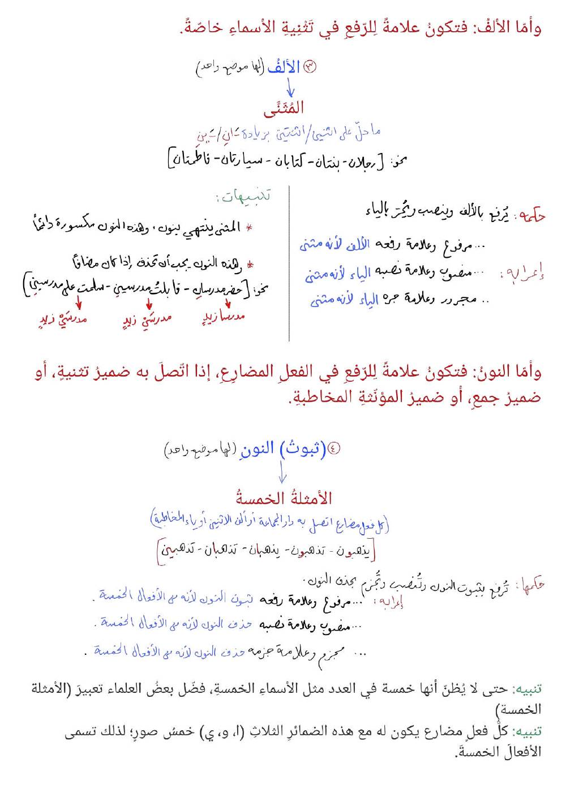
↓ الشرح · Explanation
③ One placeالألف (لها موضع واحد)
وأمّا الألفُ فتكونُ علامةً للرفعِ في تثنيةِ الأسماءِ خاصّةً
المثنى — what denotes two, by adding ـان / ـين.
رجلان · بنتان · كتابان · سيّارتان · ناطقان
حكمه: يُرفع بالألف، ويُنصب ويُجرّ بالياء.
الإعراب… مرفوعٌ وعلامة رفعه الألف لأنه مثنى … منصوبٌ وعلامة نصبه الياء لأنه مثنى … مجرورٌ وعلامة جره الياء لأنه مثنى
تنبيهات• المثنى ends in a النون that is always with الكسرة. • This النون must be dropped if it is مضاف: حضر مدرّسا زيدٍ · قابلتُ مدرّسَيْ زيدٍ · سلّمتُ على مدرّسَيْ زيدٍ
④ One placeثبوت النون (لها موضع واحد)
وأمّا النونُ فتكونُ علامةً للرفعِ في الفعلِ المضارعِ، إذا اتّصلَ به ضميرُ تثنيةٍ، أو ضميرُ جمعٍ، أو ضميرُ المؤنثةِ المخاطبةِ
الأمثلة الخمسة — every مضارع joined to واو الجماعة, ألف الاثنين or ياء المخاطبة.
يذهبون · تذهبون · يذهبان · تذهبان · تذهبين
حكمها: تُرفع بثبوت النون، وتُنصب وتُجزم بحذفها.
الإعراب… مرفوعٌ وعلامة رفعه ثبوت النون لأنه من الأمثلة الخمسة … منصوبٌ وعلامة نصبه حذف النون لأنه من الأمثلة الخمسة … مجزومٌ وعلامة جزمه حذف النون لأنه من الأمثلة الخمسة
تنبيهSo that no one thinks they are five specific verbs, like الأسماء الخمسة, some scholars preferred the term الأمثلة الخمسة.
تنبيهEvery مضارع has five forms with these three pronouns (ا، و، ي) — that's why they are called الأفعال الخمسة.
من المذكّرة · صفحة ١٧ – ١٨Handout p. 17–18 · tap to zoom
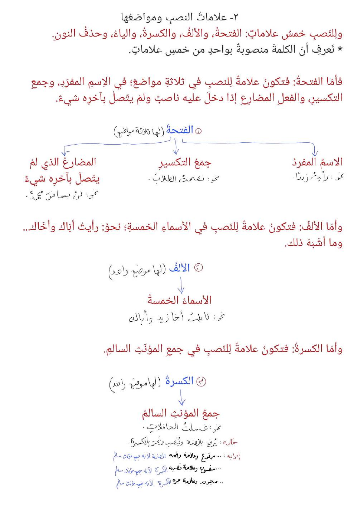
↓ الشرح · Explanation
2. Signs of the accusative٢- علامات النصب ومواضعها
تنبيهThe الألف or الهمزة must be extra (زائدة). Where it belongs to the root, the noun is not a diptote: مصطفى (صفا) · مستشفى (شفى) · عصا · فتى · هدى · أسماء · أبناء · سماء
من المذكّرة · صفحة ٢٣Handout p. 23 · tap to zoom
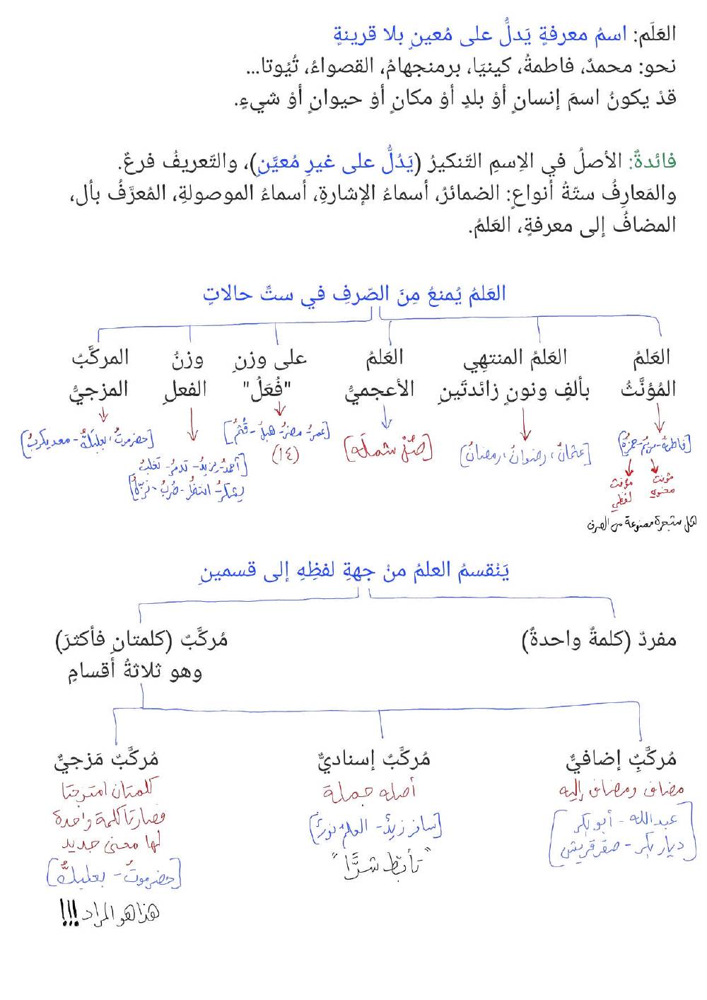
↓ الشرح · Explanation
The proper nameالعَلَم
العلمُ: اسمُ معرفةٍ يدلُّ على مُعيَّنٍ بلا قرينةٍ
A definite noun denoting a specific thing without any accompanying clue.
It may name a person, a country, a place, an animal or an object.
فائدةالأصل في الاسم التنكير (it points to nothing specific) and التعريف فرع. The معارف are six: الضمائر، أسماء الإشارة، الأسماء الموصولة، المعرّف بأل، المضاف إلى معرفة، العلم.
العلم يُمنع من الصرف في ستّ حالات
العلم المؤنث
in form or in meaning
فاطمةُ · مريمُ · حمزةُ
المنتهي بألف ونون زائدتين
عثمانُ · رضوانُ · رمضانُ
العلم الأعجمي
إبراهيمُ · إسماعيلُ
على وزن «فُعَل»
(14 names)
عمرُ · مضرُ · هُبَلُ · قُثَمُ
وزن الفعل
أحمدُ · يزيدُ · تدمرُ · تغلبُ · يشكرُ
المركّب المزجي
حضرموتُ · بعلبكُّ · معديكربُ
سؤالIs شجرة a diptote? No — it's feminine in form, but it isn't an علم: شجرةٌ.
ينقسم العلم من جهة لفظه إلى قسمين
مفرد
one word
مركّب
two words or more — three kinds:
مركّب إضافي
مضاف ومضاف إليه
عبدُ الله · أبو بكر · ديارُ بكر · صقرُ قريش
مركّب إسنادي
Originally a sentence
سافر زيدٌ · العلمُ نورٌ · تأبّط شرًّا
مركّب مزجي
Two words blended into one, with a new meaning — this is the one meant!
حضرموتُ · بعلبكُّ
من المذكّرة · صفحة ٢٤Handout p. 24 · tap to zoom
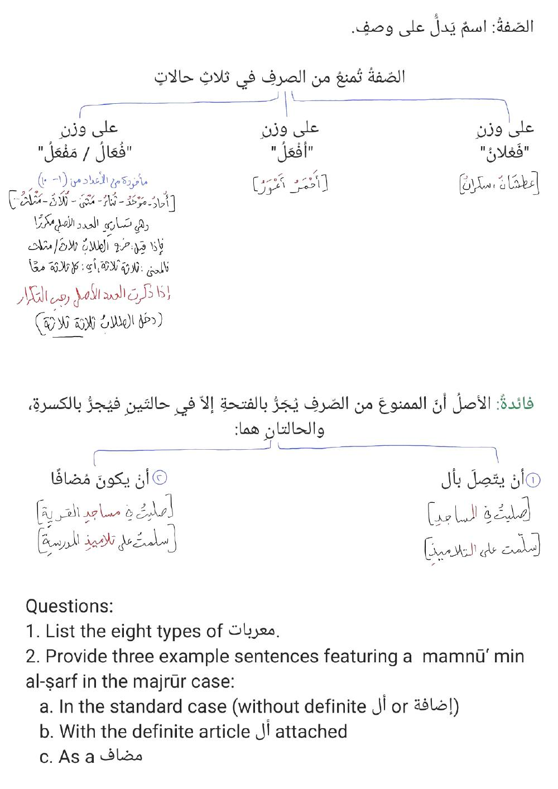
↓ الشرح · Explanation
The adjectiveالصفة
الصفة: اسم يدل على وصف — a noun that describes. It is a diptote in three cases:
فائدةThese number patterns equal the original number repeated: if it's said جاء الطلابُ ثُلاثَ / مَثْلَثَ, the meaning is “three by three” — i.e. three at a time. If you use the original number, you must repeat it:دخل الطلابُ ثلاثةً ثلاثةً.
فائدةالأصل أن الممنوع من الصرف يُجرّ بالفتحة — except in two cases, where it takes الكسرة:
١. أن يتّصل بأل
صلّيتُ في المساجدِ · سلّمتُ على التلاميذِ
٢. أن يكون مضافًا
صلّيتُ في مساجدِ القرية · سلّمتُ على تلاميذِ المدرسة
Exercisesأسئلة
List the eight types of معربات.
By vowels: الاسم المفرد، جمع التكسير، جمع المؤنث السالم، المضارع الذي لم يتصل بآخره شيء. By letters: المثنى، جمع المذكر السالم، الأسماء الخمسة، الأمثلة الخمسة.
Give three sentences with a ممنوع من الصرف in the مجرور case: (a) the standard case, without أل or إضافة; (b) with أل; (c) as a مضاف.
(a) صلّيتُ في مساجدَ كثيرةٍ — الفتحة (b) صلّيتُ في المساجدِ — الكسرة (c) صلّيتُ في مساجدِ المدينة — الكسرة
بسم الله الرحمن الرحيم
المقدّمة الآجرّوميّة
الدرس الخامس (أ): أحكام الأفعال من حيث الإعراب والبناء
1. The fixed ending of the past verb١- بناء الماضي
فالماضي مفتوحُ الآخرِ أبدًا
The past verb always ends with الفتحة.
الماضي
What indicates an event in the past: ذهبَ.
علامته
It accepts تاء التأنيث الساكنة and تاء الفاعل.
حكمه
الفعل الماضي مبنيّ باتفاق النحاة — مبني by agreement of the grammarians.
بناء الماضي (٣ حالات)
يُبنى على الضم
if واو الجماعة is joined to it
ذهبُوا · تناصحُوا · استخرجُوا
يُبنى على السكون
if a voweled ضمير رفع is joined to it (تاء الفاعل، نا الفاعلين، نون الإناث)
ذهبْتُ · ذهبْنا · ذهبْنَ
يُبنى على الفتح
in all other cases
ذهبَ · ذهبَتْ · ذهبَا · جرى · دعا
الإعراب١. ذهبوا: «ذهبَ» فعلٌ ماضٍ مبنيٌّ على الضم لاتصاله بواو الجماعة لا محلّ له من الإعراب، والواو ضميرٌ متصلٌ مبنيٌّ على السكون في محلّ رفع فاعل. ٢. ذهبتُ: «ذهبَ» فعلٌ ماضٍ مبنيٌّ على السكون لاتصاله بتاء الفاعل لا محلّ له من الإعراب، والتاء ضميرٌ متصلٌ مبنيٌّ على الضم في محلّ رفع فاعل. ٣. ذهبَ: فعلٌ ماضٍ مبنيٌّ على الفتح لا محلّ له من الإعراب، والفاعل ضميرٌ مستترٌ تقديره «هو». * جرى / دعا: فعلٌ ماضٍ مبنيٌّ على الفتح المقدّر منع من ظهوره التعذّر.
من المذكّرة · صفحة ٢٦Handout p. 26 · tap to zoom
↓ الشرح · Explanation
تنبيهAnother view: the past verb is built only on الفتح — never on الضم or السكون. In those two cases the الفتح is implied: in the first, because the place is taken by the الضمة that suits the الواو (المناسبة); in the second, because Arabs dislike four voweled letters in a row in what is like one word (unlike ضربَكَ). This is the meaning of the author's words «مفتوح الآخر أبدًا».
الإعراب على هذا القول١. ذهبوا: «ذهبَ» فعلٌ ماضٍ مبنيٌّ على الفتح المقدّر منع من ظهوره اشتغال المحلّ بحركة المناسبة… ٢. ذهبتُ: «ذهبَ» فعلٌ ماضٍ مبنيٌّ على الفتح المقدّر منع من ظهوره كراهة توالي أربع حركات فيما هو كالكلمة الواحدة…
2. The fixed ending of the command verb٢- بناء الأمر
والأمرُ مجزومٌ أبدًا
The command verb is always مجزوم.
الأمر
What requests an event to happen in the future: اذهبْ.
علامته
It accepts ياء المؤنثة المخاطبة, while indicating a request.
حكمه
مبنيّ على الصحيح — the view of البصريين.
قاعدةفعل الأمر يُبنى على ما يُجزم به مضارعه! — the command is built on whatever its مضارع is put in الجزم with:
لم يذهبَنَّ
اذهبَنَّ
لم يذهبوا / يذهبا / تذهبي
اذهبوا / اذهبا / اذهبي
لم يذهبْنَ
اذهبْنَ
لم يذهبْ
اذهبْ
لم يدعُ / يجرِ / يسعَ
ادعُ / اجرِ / اسعَ
من المذكّرة · صفحة ٢٧Handout p. 27 · tap to zoom
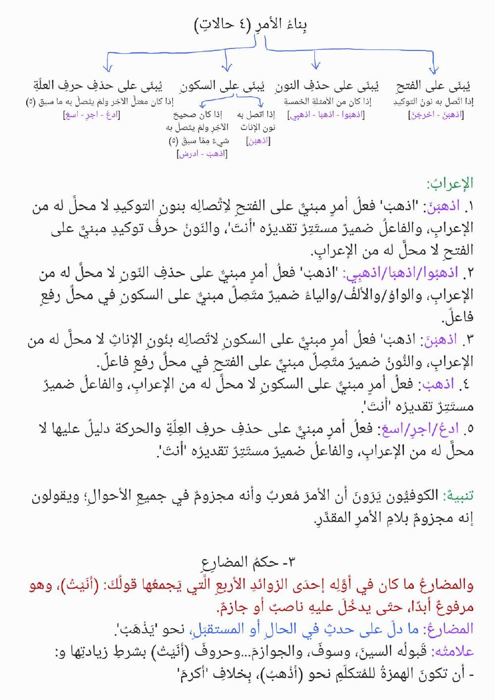
↓ الشرح · Explanation
بناء الأمر (٤ حالات)
يُبنى على الفتح
if نون التوكيد is joined to it
اذهبَنَّ · اخرجَنَّ
يُبنى على حذف النون
if it is one of الأمثلة الخمسة
اذهبوا · اذهبا · اذهبي
يُبنى على السكون
with نون الإناث; or if صحيح الآخر with nothing joined
اذهبْنَ · اذهبْ · ادرسْ
يُبنى على حذف حرف العلة
if معتل الآخر with nothing joined
ادعُ · اجرِ · اسعَ
الإعراب١. اذهبَنَّ: «اذهبْ» فعلُ أمرٍ مبنيٌّ على الفتح لاتصاله بنون التوكيد لا محلّ له من الإعراب، والفاعل ضميرٌ مستترٌ تقديره «أنت»، والنون حرف توكيد مبنيٌّ على الفتح لا محلّ له من الإعراب. ٢. اذهبوا / اذهبا / اذهبي: «اذهبْ» فعلُ أمرٍ مبنيٌّ على حذف النون لا محلّ له من الإعراب، والواو / الألف / الياء ضميرٌ متصلٌ مبنيٌّ على السكون في محلّ رفع فاعل. ٣. اذهبْنَ: «اذهبْ» فعلُ أمرٍ مبنيٌّ على السكون لاتصاله بنون الإناث لا محلّ له من الإعراب، والنون ضميرٌ متصلٌ مبنيٌّ على الفتح في محلّ رفع فاعل. ٤. اذهبْ: فعلُ أمرٍ مبنيٌّ على السكون لا محلّ له من الإعراب، والفاعل ضميرٌ مستترٌ تقديره «أنت». ٥. ادعُ / اجرِ / اسعَ: فعلُ أمرٍ مبنيٌّ على حذف حرف العلة، والحركة قبلها دليلٌ عليها، لا محلّ له من الإعراب، والفاعل ضميرٌ مستترٌ تقديره «أنت».
تنبيهالكوفيون hold that الأمر is مُعرَب and مجزوم in every case — مجزوم by an implied لام الأمر.
3. The ruling of the present verb٣- حكم المضارع
والمضارعُ ما كان في أوّلِه إحدى الزوائدِ الأربعِ التي يجمعُها قولُك: «أنَيْتُ»، وهو مرفوعٌ أبدًا، حتى يدخلَ عليه ناصبٌ أو جازمٌ
المضارع
What indicates an event in the present or future: يذهبُ.
علامته
It accepts السين، سوف، النواصب، الجوازم… and the letters of «أنيت», on condition that they are extra:
Letter
Condition
Example
Not like…
الهمزة
For the speaker
أذهبُ
أكرمَ
النون
For the speaker with others, or one glorifying himself
نقولُ
نرجس
الياء
For the absent
يقرأُ
يرنأ
التاء
For the one addressed, or an absent female
أنتَ تطبخُ · هندٌ تطبخُ
تعلّمَ
من المذكّرة · صفحة ٢٨Handout p. 28 · tap to zoom
↓ الشرح · Explanation
حكمه: الأصل أن المضارع مُعرَب — it takes الرفع, النصب and الجزم — but it is مبني in two cases:
المضارع
معرب (٣)
see below
يُبنى على السكون
if نون الإناث is joined to it
يدرسْنَ · تدرسْنَ
يُبنى على الفتح
if نون التوكيد is joined to it
يسافرَنَّ · تذهبَنَّ
الإعراب١. يدرسْنَ: «يدرسْ» فعلٌ مضارعٌ مبنيٌّ على السكون لاتصاله بنون الإناث، والنون ضميرٌ متصلٌ مبنيٌّ على الفتح في محلّ رفع فاعل. ٢. يسافرَنَّ: «يسافرَ» فعلٌ مضارعٌ مبنيٌّ على الفتح لاتصاله بنون التوكيد، والنون حرفٌ للتوكيد مبنيٌّ على الفتح لا محلّ له من الإعراب.
من المذكّرة · صفحة ٢٩Handout p. 29 · tap to zoom
↓ الشرح · Explanation
حالات إعراب المضارع (٣)
يُرفع
if free of الناصب والجازم
يخرجُ · يدعو · يجري · يسعى · يذهبون
يُنصب
if preceded by one of the 10 أدوات نصب
يُجزم
if preceded by a أداة جزم — two kinds: one putting in الجزم a single verb (4), and one putting in الجزم two verbs (13)
الإعراب١. يخرجُ: فعلٌ مضارعٌ مرفوعٌ لتجرّده عن الناصب والجازم، وعلامة رفعه الضمة الظاهرة على آخره، والفاعل ضميرٌ مستترٌ تقديره «هو». ٢. يدعو: … وعلامة رفعه الضمة المقدّرة على آخره منع من ظهورها الثقل… ٣. يجري: … وعلامة رفعه الضمة المقدّرة على آخره منع من ظهورها الثقل… ٤. يسعى: … وعلامة رفعه الضمة المقدّرة على آخره منع من ظهورها التعذّر… ٥. يذهبون / يذهبان / تذهبين: «يذهب» فعلٌ مضارعٌ مرفوعٌ لتجرّده عن الناصب والجازم، وعلامة رفعه ثبوت النون لأنه من الأمثلة الخمسة، والواو / الألف / الياء ضميرٌ متصلٌ مبنيٌّ على السكون في محلّ رفع فاعل.
مصطلحاتمُضمَرة: not pronounced · جوازًا: it is permitted to pronounce it · وجوبًا: it is not permitted to pronounce it.
من المذكّرة · صفحة ٣٠Handout p. 30 · tap to zoom
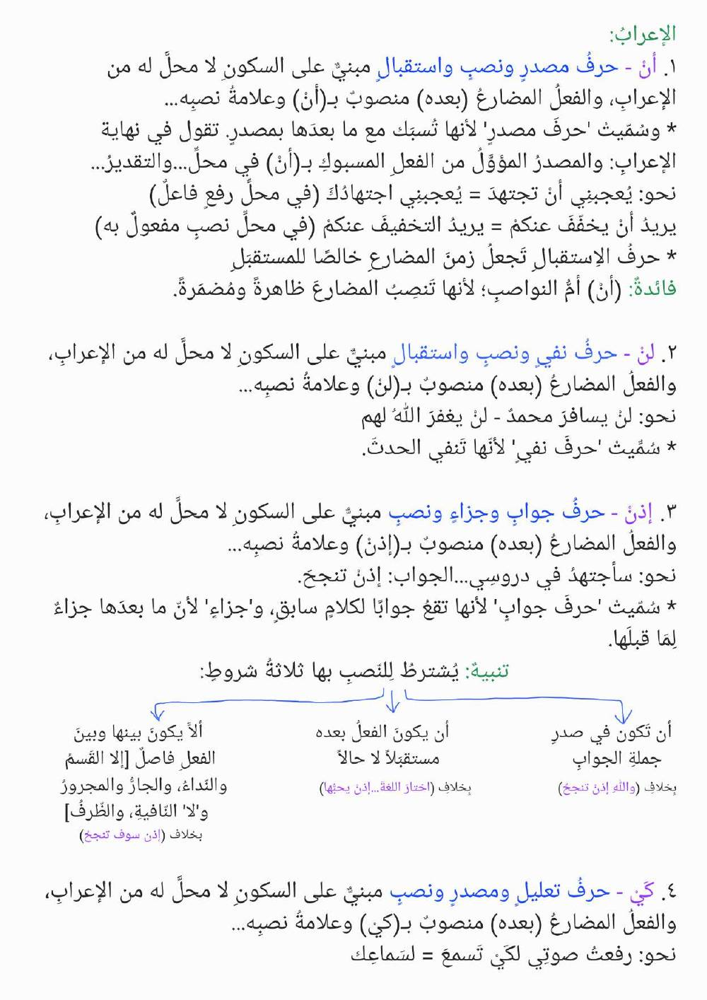
↓ الشرح · Explanation
1. “that / to”١. أنْ
أنْ — حرف مصدر ونصب واستقبال.
الإعرابأنْ: حرفُ مصدرٍ ونصبٍ واستقبالٍ مبنيٌّ على السكون لا محلّ له من الإعراب، والفعل المضارع بعده منصوبٌ بـ«أنْ» وعلامة نصبه…
• Called حرف مصدر because it and what follows it are interpreted as a مصدر. At the end of the parsing you say: والمصدر المؤوَّل من الفعل المسبوك بـ«أنْ» في محلّ…، والتقدير…
يعجبني أن تجتهدَ = يعجبني اجتهادُك (في محلّ رفع فاعل)
يريد أن يخففَ عنكم = يريد التخفيفَ عنكم (في محلّ نصب مفعول به)
• حرف استقبال: it makes the time of the مضارع purely future.
فائدة«أنْ» أمّ النواصب — because it puts the مضارع in النصب both when pronounced and when hidden.
2. “will never”٢. لنْ
لنْ — حرف نفي ونصب واستقبال. Called حرف نفي because it negates the event.
لن يسافرَ محمدٌ | لن يغفرَ اللهُ لهم
الإعرابلنْ: حرفُ نفيٍ ونصبٍ واستقبالٍ مبنيٌّ على السكون لا محلّ له من الإعراب، والفعل المضارع بعده منصوبٌ بـ«لن» وعلامة نصبه…
3. “in that case”٣. إذنْ
إذنْ — حرف جواب وجزاء ونصب. Called حرف جواب because it comes as an answer to a previous statement, and جزاء because what follows it is a result of what came before.
سأجتهد في دروسي… — الجواب: إذنْ تنجحَ
تنبيه: يُشترط للنصب بها ثلاثة شروط
١. أن تكون في صدر جملة الجواب — at the very start of the answer.
٢. أن يكون الفعل بعده مستقبلًا لا حالًا — the verb after it refers to the future, not the present.
٣. ألّا يكون بينها وبين الفعل فاصل — nothing separates it from the verb, exceptالقسم، والنداء، والجار والمجرور، و«لا» النافية، والظرف. So إذنْ سوف تنجحُ is not منصوب.
من المذكّرة · صفحة ٣١Handout p. 31 · tap to zoom
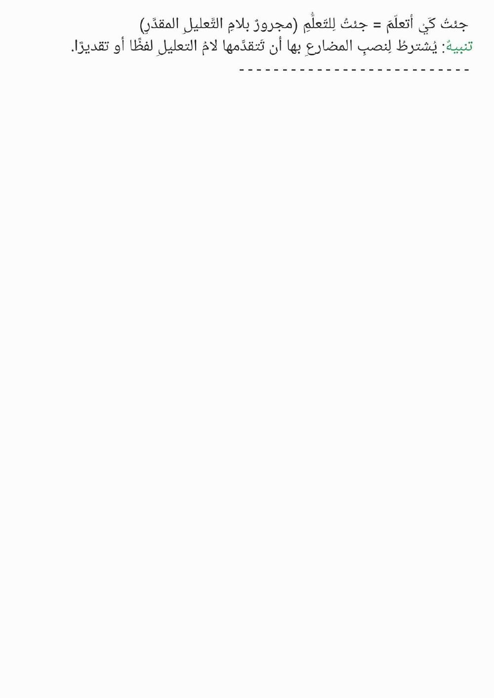
↓ الشرح · Explanation
4. “so that”٤. كيْ
كيْ — حرف تعليل ومصدر ونصب.
رفعتُ صوتي لكي تسمعَ = لسماعِك
جئتُ كي أتعلّمَ = جئتُ للتعلّم (مجرور بلام التعليل المقدّرة)
تنبيهFor كي to put the مضارع in النصب, it must be preceded by لام التعليل — pronounced or implied.
بسم الله الرحمن الرحيم
المقدّمة الآجرّوميّة
الدرس الخامس (ب): أحكام الأفعال من حيث الإعراب والبناء
Lesson Five (B) — The Remaining النواصب, and the الجوازم
١- بقية نواصب المضارع
٢- جوازم المضارع
من المذكّرة · صفحة ٣٢Handout p. 32 · tap to zoom
↓ الشرح · Explanation
1. The remaining accusative particles١- بقية نواصب المضارع
تنبيهThe grammarians differed on the number of النواصب. الكوفيون held they are ten — as mentioned in the متن. البصريون held they are only the four above (أنْ، لنْ، إذنْ، كيْ) — and this is correct. In the remaining six, the real ناصب is «أنْ» المضمرة.
5. The particle of reason٥. لام التعليل / لام كي
حرف جرّ (gives the reason) مبنيّ على الكسر لا محلّ له من الإعراب.
الإعرابتنجحَ: فعلٌ مضارعٌ منصوبٌ بـ«أنْ» مضمرة وجوبًا بعد فاء السببية الواقعة بعد الأمر، وعلامة نصبه…
— and likewise for the rest: «…بعد فاء السببية الواقعة بعد الدعاء / النهي / الاستفهام…»
من المذكّرة · صفحة ٣٤Handout p. 34 · tap to zoom
↓ الشرح · Explanation
الفروق
• الأمر vs الدعاء: الأمر is a request from higher to lower; الدعاء is a request from lower to higher.
• العرض vs التحضيض: العرض is a request with gentleness and softness; التحضيض is an urgent, pressing request.
• التمني vs الترجي: التمني is for the impossible or what is very difficult; الترجي is for something loved and possible.
النفي can be by a حرف, a فعل or an اسم:
ما قابلتُ الأستاذَ فأسألَه | ليس عندي علمٌ بالمسألة فأجيبَ | زيدٌ غيرُ غنيٍّ فيحجَّ
9. The particle of accompaniment٩. واو المعيّة
حرف مبنيّ على الفتح لا محلّ له من الإعراب. Called معيّة because what comes before it accompanies what comes after it — it means «مع».
تنبيهLike the الفاء, this الواو must be preceded by a طلب or نفي, as in the examples above. In the parsing you say: …فعل مضارع منصوب بـ«أن» مضمرة وجوبًا بعد واو المعية الواقعة بعد…، وعلامة نصبه…
10. “until / unless”١٠. أوْ
أو العاطفة — حرف عطف (meaning «إلى» or «إلّا») مبنيّ على السكون لا محلّ له من الإعراب.
سأعبدُ اللهَ أو أموتَ | ستدخلُ النارَ أو تُسلِمَ
* It may carry both meanings: سأعاقبُ اللصَّ أو يُخرجَ النقود.
الإعرابيُخرجَ: فعلٌ مضارعٌ منصوبٌ بـ«أنْ» مضمرة وجوبًا بعد «أو» التي بمعنى إلى أو إلّا، وعلامة نصبه… والمصدر المؤوّل من الفعل المسبوك بـ«أنْ» المضمرة معطوفٌ على مصدرٍ مقدّر، والتقدير: لَيكونَنّ العقابُ مني للصّ أو إخراجُ النقود.
* ألمْ is لم joined with the همزة الاستفهام: ألم يذهبْ محمدٌ؟ — the الهمزة is حرف استفهام مبنيّ على الفتح لا محلّ له من الإعراب.
٢. لمّا — حرف نفي وجزم وقلب.
الإعراب﴿لمّا يذوقوا العذاب﴾: «لمّا» حرفُ نفيٍ وجزمٍ وقلبٍ. «يذوقوا» فعلٌ مضارعٌ مجزومٌ وعلامة جزمه حذف النون لأنه من الأمثلة الخمسة…
الفرق بين «لم» و«لمّا»لم negates in the past, and the negation does not necessarily reach the present. لمّا negates past and present together, and conveys expectation (التوقّع) — it hasn't happened yet.
من المذكّرة · صفحة ٣٦Handout p. 36 · tap to zoom
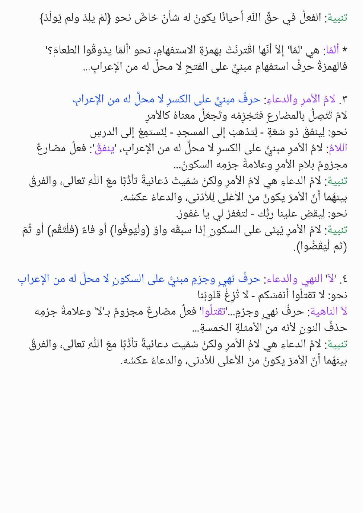
↓ الشرح · Explanation
تنبيهA verb concerning Allah sometimes has its own particular context, e.g. ﴿لم يلدْ ولم يولدْ﴾.
* ألمّا is لمّا joined with the همزة الاستفهام: ألمّا يذوقوا الطعام؟
٣. لام الأمر والدعاء — حرف مبنيّ على الكسر لا محلّ له من الإعراب. A اللام joined to the مضارع that puts in الجزم it and gives it the meaning of a command.
﴿لِينفقْ ذو سعةٍ﴾ | لِتذهبْ إلى المسجد | لِتستمعْ إلى الدرس
الإعراباللام: لام الأمر مبنيٌّ على الكسر لا محلّ له من الإعراب. «ينفقْ»: فعلٌ مضارعٌ مجزومٌ بلام الأمر وعلامة جزمه السكون…
تنبيهIt is the same لام الأمر, but it is called دعائية out of الأدب with Allah ﷻ. The difference: الأمر is from higher to lower, الدعاء the reverse. ﴿لِيقضِ علينا ربُّك﴾ · لِتغفرْ لي يا غفور
تنبيهلام الأمر is built on السكون if preceded by واو(﴿ولْيوفوا﴾), فاء(فلْتقُمْ) or ثمّ(﴿ثمّ لْيقضوا﴾).
٤. «لا» النهي والدعاء — حرف نهي وجزم مبنيّ على السكون لا محلّ له من الإعراب.
﴿لا تقتلوا أنفسكم﴾ | ﴿لا تُزِغْ قلوبَنا﴾
الإعراب«لا» الناهية: حرفُ نهيٍ وجزمٍ… «تقتلوا»: فعلٌ مضارعٌ مجزومٌ بـ«لا» وعلامة جزمه حذف النون لأنه من الأمثلة الخمسة…
تنبيهLikewise, it is the same as لا الناهية, but called دعائية out of الأدب with Allah.
بسم الله الرحمن الرحيم
المقدّمة الآجرّوميّة
الدرس الخامس (ج): أحكام الأفعال من حيث الإعراب والبناء
Lesson Five (C) — The Remaining الجوازم
١- بقية جوازم المضارع
من المذكّرة · صفحة ٣٧Handout p. 37 · tap to zoom
↓ الشرح · Explanation
Second group: jussive on two verbsالقسم الثاني: ما يجزم فعلين (١٣ أداة)
→ In function: they الجزم two verbs. → In meaning: they indicate a condition — تعليق شيء بشيء, linking one thing to another. So they are called أدوات الشرط الجازمة. The first verb is called فعل الشرط; the second is called جواب الشرط وجزاؤه.
إنْ تذاكرْ تنجحْ
الإعراب«إنْ»: حرفُ شرطٍ جازمٌ يجزم فعلين؛ الأول فعل الشرط، والثاني جوابه وجزاؤه، مبنيٌّ على السكون لا محلّ له من الإعراب. «تذاكرْ»: فعلٌ مضارعٌ مجزومٌ بـ«إنْ» وعلامة جزمه السكون، وهو فعل الشرط، والفاعل ضميرٌ مستترٌ وجوبًا تقديره «أنت». «تنجحْ»: فعلٌ مضارعٌ مجزومٌ بـ«إنْ» وعلامة جزمه السكون، وهو جواب الشرط وجزاؤه، والفاعل ضميرٌ مستترٌ وجوبًا تقديره «أنت».
فائدة: لفعلَي الشرط وجوابه أربع صور
١. الأول مضارع، والثاني مضارع
إنْ تقرأْ أقرأْ
٢. الأول ماضٍ، والثاني ماضٍ
﴿إنْ عُدتم عُدنا﴾
٣. الأول مضارع، والثاني ماضٍ
إنْ يقمْ زيدٌ قمتُ
٤. الأول ماضٍ، والثاني مضارع
إنْ ذهب زيدٌ أذهبْ
تنبيهالفعل الماضي has no place in الإعراب — except when it is فعل شرط or جواب شرط; there it is «في محل جزم فعل الشرط / جواب الشرط».
تنبيهThese tools are all أسماء, except «إنْ» and «إذما», which are two حرفان.
من المذكّرة · صفحة ٣٨Handout p. 38 · tap to zoom
↓ الشرح · Explanation
فائدة«إنْ» and «إذما» have a general meaning: linking the answer to the condition, absolutely. The rest of the tools carry an extra meaning, which falls under five: العاقل، وغير العاقل، والزمان، والمكان، والحال.
Tool
Meaning
Example
إنْ · إذما
The answer depends on the condition happening
﴿إنْ يتفرّقا يُغنِ اللهُ كلًّا من سعته﴾
مَنْ
للعاقل — rational beings
﴿مَن يتّقِ اللهَ يجعلْ له مخرجًا﴾
ما · مهما
لغير العاقل — non-rational
﴿ما تفعلوا من خيرٍ يعلمْه الله﴾ · مهما تحفظْ من المتون ينفعْك
﴿أينما تكونوا يأتِ بكم الله﴾ · حيثما تكنْ يرزقْك الله
كيفما
للحال — state
كيفما تكنْ يكنْ أولادُك
الإعرابيتفرّقا: فعلٌ مضارعٌ مجزومٌ بـ«إنْ» وعلامة جزمه حذف النون لأنه من الأمثلة الخمسة، وهو فعل الشرط، والألف ضميرٌ متصلٌ مبنيٌّ على السكون في محلّ رفع فاعل. يُغنِ: فعلٌ مضارعٌ مجزومٌ بـ«إنْ» وعلامة جزمه حذف حرف العلة والحركة قبلها دليلٌ عليها، وهو جواب الشرط وجزاؤه… مَن / ما / متى…: اسمُ شرطٍ جازمٌ يجزم فعلين؛ الأول فعل الشرط والثاني جوابه وجزاؤه، مبنيٌّ على السكون في محلّ…
من المذكّرة · صفحة ٣٩Handout p. 39 · tap to zoom
↓ الشرح · Explanation
تنبيه: كيفماالبصريون said it does notالجزم, since there is no attested example of الجزم with it in the speech of the Arabs. الكوفيون drew an analogy with the other tools and used it for الجزم.
“Whichever” — all five meaningsأيّ: لكلّ المعاني الخمسة بحسب المضاف إليه
للعاقل
أيُّ طالبٍ يذاكرْ ينجحْ
لغير العاقل
أيَّ متنٍ تحفظْه ينفعْك
للزمان
أيَّ يومٍ تصلْ أكرمْك
للمكان
أيَّ مركزٍ تدرسْ أدرسْ
للحال
بأيِّ طريقةٍ تذاكرْ أذاكرْ
“When” — future time, in poetry onlyإذا: للزمان المستقبل
It is used in poetry specifically, as in:
استغنِ ما أغناكَ ربُّك بالغنى *** وإذا تُصِبْكَ خصاصةٌ فتجمَّلِ
Be content with what your Lord has enriched you with; and when poverty strikes you, bear it with dignity.
Rules for parsing the conditional nounsقواعد إعراب أسماء الشرط الجازمة
١.كلّ أسماء الشرط مبنيّة في محلّ… (according to their position in the sentence) — except«أيّ», which is مُعرَبة لفظًا ومحلًّا.
من المذكّرة · صفحة ٤٠Handout p. 40 · tap to zoom
↓ الشرح · Explanation
٢.إعراب [مَنْ – ما – مهما] — parsed according to their position in the sentence:
Position
When
Example
في محلّ رفع مبتدأ
If the verb of the condition is intransitive, or transitive and already has its object, or ناقص and already has its خبر
مَن يجتهدْ ينجحْ · ما تقرأْه تستفدْ منه · مَن كان مؤمنًا دخلَ الجنة
في محلّ نصب مفعول به
If the verb of the condition is transitive and hasn't taken its object
ما تقرأْ تستفدْ منه
في محلّ نصب خبر للفعل الناقص
If the verb is ناقص and hasn't taken its خبر
مهما تكنْ درجتُك فأنت محاسَبٌ
في محلّ جرّ اسم مجرور
If preceded by a حرف جر
بمَن تثقْ أثقْ
الإعراب«مَن» (مَن يجتهدْ ينجحْ): اسمُ شرطٍ جازمٌ يجزم فعلين؛ الأول فعل الشرط والثاني جوابه وجزاؤه، مبنيٌّ على السكون في محلّ رفع مبتدأ. «ما» (ما تقرأْ تستفدْ منه): … مبنيٌّ على السكون في محلّ نصب مفعول به. «مهما» (مهما تكنْ درجتُك…): … مبنيٌّ على السكون في محلّ نصب خبر… «مَن» (بمَن تثقْ أثقْ): … مبنيٌّ على السكون في محلّ جرّ اسم مجرور.
٣.إعراب [متى – أيّان] = في محلّ نصب على الظرفية الزمانية.
متى تسافرْ أسافرْ
الإعراب«متى»: اسمُ شرطٍ جازمٌ يجزم فعلين؛ الأول فعل الشرط والثاني جوابه وجزاؤه، مبنيٌّ على السكون في محلّ نصب على الظرفية الزمانية.
٤.إعراب [أين – أنّى – حيثما] = في محلّ نصب على الظرفية المكانية.
﴿أينما تكونوا يدرككم الموت﴾
الإعراب«أين»: اسمُ شرطٍ جازمٌ يجزم فعلين؛ الأول فعل الشرط والثاني جوابه وجزاؤه، مبنيٌّ على الفتح في محلّ نصب على الظرفية المكانية.
٥.إعراب [كيفما] = في محلّ نصب حال.
كيفما تعاملِ الناسَ يعاملوك
٦.إعراب [أيّ] = according to what it is added to (على حسب المضاف إليه).
أيُّ إنسانٍ يذهبْ أذهبْ معه = مبتدأ
— The notes continue in the next part of the handout (page 41 onwards). —